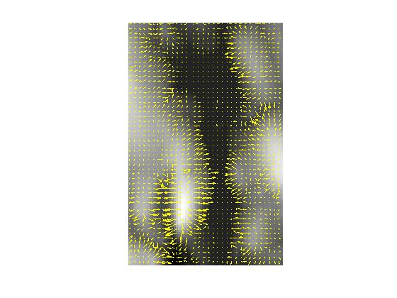

demFlow
Flow direction for a DEM
Contents
Description
[R, S] = demFlow(E, d1, d2) computes the flow direction and downslope for all the pixels in a digital elevation model E. E is a matrix of elevation values. d1 and d2 are the horizontal and vertical pixel center spacing. d1 and d2 are optional; if omitted, a value of 1.0 is assumed.
Definitions
R, a matrix the same size as E, contains the pixel flow direction, in radians, for each pixel of E. Pixel flow direction is measured counter clockwise from the east-pointing horizontal axis. R is NaN for each pixel of E that has no downhill neighbors.
S, a matrix the same size as E, contains the downward slope (along the pixel flow direction) for each pixel of E. Negative values indicate that the corresponding pixel of E has no downhill neighbors.
Reference
Tarboton, "A new method for the determination of flow directions and upslope areas in grid digital elevation models," Water Resources Research, vol. 33, no. 2, pages 309-319, February 1997.
Example
s = load('milford_ma_dem');
E = s.Zc(146:247, 146:210);
[R, S] = demFlow(E);
visDemFlow(E, R, S);
